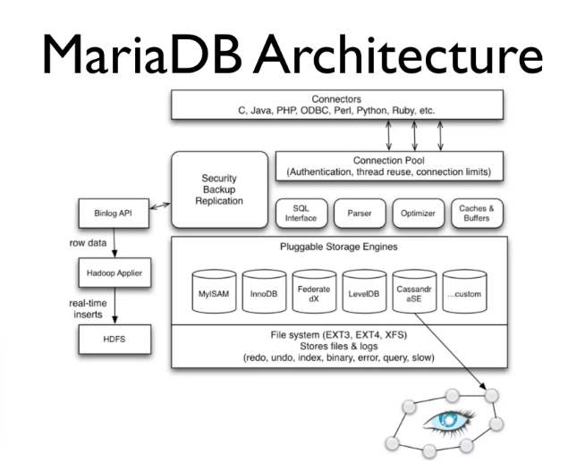

Bases de datos relacionales (SQL)

Bases de datos relacionales, características y actualidad
Noviembre 24, 2024 publicado por Ana María Zapata
La abstracción de objetos del mundo real a través del concepto de entidades y sus relaciones está ampliamente difundido en y adoptado por el mundo de la informática.
En esta segunda entrada de la serie de bases de datos, vamos a profundizar en las bases de datos relacionales con la intención de responder a tres preguntas académicas clave:
¿Qué características tiene una base de datos relacional?
¿Cuáles son los motores de bases de datos relacionales licenciados más utilizados en el desarrollo de aplicaciones?
¿Cuáles son los motores de bases de datos relacionales Open Source?
Iniciaremos con la definición técnica de los motores de bases de datos relacionales, para luego profundizar en sus características y finalmente, describir los licenciados y de uso libre más utilizados.
Definición
Un motor de base de datos relacional (RDMBS en inglés) es un sistema de software diseñado para administrar bases de datos organizadas en un modelo relacional, donde los datos se estructuran en tablas con filas y columnas, y las relaciones entre estas tablas están claramente definidas. Los RDBMS permiten ejecutar consultas SQL (Structured Query Language) para insertar, actualizar, eliminar y recuperar datos. Además, garantizan características como integridad referencial, atomicidad, consistencia, aislamiento y durabilidad (ACID), lo que asegura transacciones confiables y seguras.
Características
Modelo Relacional: Estructura basada en tablas con relaciones bien definidas.
Compatibilidad SQL: Soporte para consultas estándar y optimización avanzada.
ACID: Garantizan transacciones consistentes y duraderas.
Multiplataforma: Compatibilidad con sistemas operativos como Windows, Linux y macOS.
Escalabilidad: Soporte para operaciones con grandes volúmenes de datos.
Integridad Referencial: Mantenimiento automático de relaciones entre tablas.
Arquitectura Cliente-Servidor: Los clientes interactúan con un servidor que maneja todas las operaciones.
Motores de bases de datos relacionales licenciados más utilizados
Este apartado responde a la pregunta "¿Cuáles son los motores de bases de datos relacionales licenciados más utilizados en el desarrollo de aplicaciones?", a continuación la especificación correspondiente.
Oracle Database
Es una solución de base de datos relacional de código cerrado, ampliamente utilizada en aplicaciones empresariales de sectores como el financiero y de telecomunicaciones.
Características
Escalabilidad extrema, soporte para OLTP y OLAP, seguridad robusta, y capacidades avanzadas como partición y compresión de datos.
Arquitectura
Oracle Database presenta una arquitectura cliente-servidor con opciones para almacenamiento distribuido. Usa mecanismos avanzados como Oracle RAC para alta disponibilidad y se basa en dos componentes principales: instancia de base de datos y estructura física de la base de datos.
A continuación, una explicación desagregada de los componentes:
Instancia: Incluye la Memoria Global del Sistema (SGA) y procesos en segundo plano como PMON, SMON, DBWn, y LGWR.
Estructuras Físicas: Archivos de datos, archivos de control, y logs de recuperación en disco.
System Global Area (SGA): Gestiona áreas de memoria compartida para optimizar el rendimiento, como la caché de buffers de datos y la caché del pool compartido.
Ejecución SQL: Los comandos son gestionados en la PGA (Área Global de Programa) antes de interactuar con la base de datos.
El diagrama arquitectónico para el resumen expuesto anteriormente se muestra a continuación:

Microsoft SQL Server
También es utilizada para aplicaciones empresariales en diversos sectores, sin embargo; está especializada para el desarrollo de aplicaciones de negocio y de datos en entornos Windows.
Características
Fuerte integración con el ecosistema de Microsoft, herramientas como SSRS y SSIS para informes y ETL.
Arquitectura
SQL Server utiliza una arquitectura cliente-servidor con soporte integrado para análisis y gestión de datos,incluyendo capacidades de procesamiento de datos en memoria (in-memory OLTP), sus componentes se describen a continuación:
Memoria: El caché de buffers y el planificador de consultas son críticos para la optimización.
Procesos: El motor incluye el almacenamiento en disco y el motor de consultas para interactuar con los datos.
Base de datos maestra: Contiene la configuración global del servidor y metadatos.
El diagrama arquitectónico para el resumen expuesto anteriormente se especifica en la ilustración que sigue.

IBM DB2
Es una base de datos relacional licenciada de uso común en sectores como las finanzas, seguros y cadenas de suministro.
Características
Presenta herramientas para inteligencia empresarial, analítica integrada y soporte para múltiples modelos de datos.
Arquitectura
Utiliza igualmente una arquitectura cliente-servidor que en este caso está optimizada para analítica de grandes volúmenes de datos. Las aplicaciones cliente se conectan al servidor de base de datos para realizar operaciones sobre los datos. Los principales componentes del servidor DB2 incluyen:
Clientes y agentes coordinadores: Los clientes envían solicitudes SQL al agente coordinador en el servidor. Este agente maneja la planificación y ejecución de consultas, así como la comunicación con otros subagentes.
Buffer Pools: Espacios en memoria que almacenan datos temporalmente para optimizar el acceso y reducir operaciones en disco.
Prefetchers y Page Cleaners: Los "Prefetchers" cargan páginas desde el disco a los buffer pools de forma anticipada y "Page Cleaners" escriben páginas modificadas desde el buffer pool al disco.
Subagentes paralelos: Permiten el procesamiento distribuido en sistemas con múltiples núcleos o particiones, optimizando el rendimiento.
Gestor de Bloqueos: Asegura la consistencia de los datos mediante un sistema robusto de bloqueo para transacciones concurrentes.
Gestión de Logs: Los registros de transacciones son fundamentales para la recuperación en caso de fallos.
El diagrama de arquitectura para la solución IBM DB2 se especifica en la ilustración más abajo.
Motores de bases de datos relacionales de código abierto más utilizados
Este apartado responde a la pregunta "¿Cuáles son los motores de bases de datos relacionales Open Source?", a continuación la especificación correspondiente.
PostgreSQL
Es una solución de uso común en aplicaciones de alta concurrencia y sistemas que requieren complejas consultas analíticas
Características
Extensibilidad, soporte nativo para JSON, transacciones ACID completas, y réplica lógica.
Arquitectura
Utiliza una arquitectura Basada en MVCC (Multi-Version Concurrency Control) y escritura anticipada (WAL). Al ser un sistema extensible, favorece su robustez con una división en varios subsistemas:
Capa de Cliente/Interfaz: Usa protocolos como TCP/IP para conexiones cliente-servidor y permite personalización mediante extensiones.
Gestor de Consultas: Incluye el parser, reescritor de consultas, y optimizador. Este subsistema se encarga de generar planes de ejecución óptimos basados en índices y estadísticas.
Ejecutor y Controlador de Transacciones: Maneja consultas SQL, MVCC (Multiversion Concurrency Control), y el sistema de bloqueo.
Capa de Almacenamiento: Gestiona almacenamiento físico, recuperación y replicación.
En la ilustración que sigue se muestra la arquitectura de PostgreSQL.
También puede consultarse este recurso en línea para obtener más información sobre la solución PostgreSQL:
Para profundizar en relación con la arquitectura de PostgreSQL este video en Youtube es de gran utilidad.
MySQL
Es una solución de software libre muy utilizada en sitios web dinámicos y aplicaciones LAMP (Linux, Apache, MySQL, PHP).
Características
Rendimiento rápido en operaciones básicas, replicación integrada y fácil configuración.
Arquitectura
Presenta una arquitectura tipo Cliente-servidor con soporte para múltiples motores de almacenamiento como InnoDB y MyISAM. Esta es modular y cuenta con las siguientes capas principales:
Capa de Cliente/Conectores: Los clientes se conectan al servidor MySQL mediante protocolos como TCP/IP o sockets.
Capa del Servidor SQL: Gestiona las conexiones, autenticación, y validación de consultas. Esta capa contiene componentes como el optimizador de consultas y el planificador de ejecución.
Capa de Almacenamiento: Implementa un modelo de motores de almacenamiento "pluggable". Motores como InnoDB, MyISAM, y MEMORY manejan datos físicamente en el disco o en memoria.
Capas Físicas: Maneja los archivos del sistema, tablas y logs.
La arquitectura permite flexibilidad mediante motores especializados para diferentes necesidades, como InnoDB para transacciones ACID o MEMORY para consultas rápidas en memoria.
En la ilustración a continuación, se muestra la arquitectura de MySQL.

MariaDB
Es una solución comúnmente utilizada como sustituto de MySQL en proyectos open source.
Características
Compatibilidad con MySQL, pero optimizado para rendimiento avanzado y extensiones específicas.
Arquitectura
Su arquitectura es un "Fork" de MySQL con mejoras en motores de almacenamiento como XtraDB. Por tratarse de una derivación de MySQL; MariaDB comparte muchas similitudes, pero introduce características específicas para mejorar el rendimiento y la seguridad:
Capa de Conexión: Similar a MySQL, pero con mejoras en autenticación y cifrado.
Capa SQL y Optimizador: Incluye algoritmos avanzados para la optimización de consultas. Permite optimizaciones como columnas virtuales y almacenamiento distribuido.
Motores de Almacenamiento Avanzados: Motores exclusivos como Aria y Spider para análisis de datos y partición horizontal.
Seguridad Mejorada: Incluye cifrado en reposo y roles de usuario más avanzados.
En la ilustración a continuación, se muestra la arquitectura de MariaDB.
Comparativa General: RDBMS Licenciados vs Open Source
Se puede inferir, basados en la información disponible en línea; que los motores de bases de datos relacionales licenciados ofrecen soporte empresarial, mayor estabilidad y herramientas avanzadas de análisis y administración, a menudo a un alto costo. Por otro lado; los motores de bases de datos relacionales Open Source ofrecen flexibilidad y bajo costo, pero requieren conocimientos avanzados para configuración y mantenimiento adecuados.
Ventajas
Algunas de las diversas ventajas de utilizar un motor de base de datos relacional incluyen:
Estructura bien definida: La organización en tablas con filas y columnas facilita el modelado, comprensión y acceso a los datos. Esto es ideal para aplicaciones empresariales con datos claramente estructurados.
Estándar SQL: Al soportar SQL como lenguaje estándar, permite a los usuarios realizar consultas y manipular datos con facilidad. SQL es ampliamente conocido y utilizado, lo que facilita la formación y el soporte técnico.
Integridad de los datos: Mediante la integridad referencial y las restricciones (como claves primarias y foráneas), garantiza que los datos permanezcan consistentes y fiables.
Transacciones ACID: La implementación de propiedades ACID (Atomicidad, Consistencia, Aislamiento y Durabilidad) asegura que las transacciones se realicen de manera confiable, incluso en escenarios de fallos.
Seguridad robusta: Los sistemas relacionales suelen incluir controles avanzados de permisos y autenticación, lo que protege los datos contra accesos no autorizados.
Escalabilidad vertical: Muchos RDBMS permiten manejar grandes volúmenes de datos al mejorar la capacidad del hardware (escalabilidad vertical), lo cual es común en entornos empresariales tradicionales.
Limitaciones
Aunque la implementación de un motor de base de datos relacional ofrece varias ventajas, también tiene algunas limitaciones entre las que se destacan:
Rigidez en el esquema: El esquema fijo puede dificultar cambios cuando los datos evolucionan de manera no estructurada. Esto las hace menos adecuadas para manejar datos semiestructurados o no estructurados, como en aplicaciones modernas basadas en IoT o Big Data.
Escalabilidad horizontal limitada: Aunque algunos sistemas como CockroachDB están diseñados para distribución, la mayoría de los RDBMS tradicionales no son adecuados para escalabilidad horizontal o distribución masiva de datos.
Requerimientos de hardware: Las bases de datos relacionales demandan recursos significativos para operaciones intensivas y para manejar grandes conjuntos de datos. Esto puede elevar los costos en implementaciones a gran escala.
Complejidad en consultas avanzadas: Aunque SQL es poderoso, ejecutar consultas complejas en bases de datos muy grandes puede ser ineficiente y requerir optimización adicional (por ejemplo, índices o desnormalización).
Costo: Los RDBMS licenciados, como Oracle o SQL Server, tienen altos costos asociados con licencias, soporte técnico y mantenimiento. Esto puede ser un desafío para pequeñas empresas o startups.
Falta de flexibilidad para datos no relacionales: El diseño rígido de tablas las hace menos eficaces para datos jerárquicos o anidados, donde las bases de datos NoSQL, como MongoDB, suelen destacar.
Fuentes consultadas
(incluye recursos de recuperación de imágenes)
- Unversidad Europea - De las bases de datos relacionales al Big Data
- Oracle Tutorial - Aquitectura Oracle Database
- Guru99 - Fiona Marrón, 2024 - SQL Server arquitecnología (explicada)
- Medium - Bitnine Global, 2024 - Arquitectura PostgreSQL
- Geeks for Geeks, 2023 - Arquitectura de MySQL
- MariaDB - Comprendiendo la Arquitectura de MariaDB
- SlideShare - Colin Charles, Percona inc., 2016 - Tutorial completo de MariaDB
- Oracle - Arquitectura técnica de Oracle Database 19c
- Digital Ocean - Mark Drake et. al., 2022 - Comparativo de motores de bases de datos relacionales sqlite vs MySQL vs PostgreSQL
- OpenSource - Sam Bocetta, 2019 - Comparativo de 3 bases de datos Open Source: PostgreSQL, MariaDB, y SQLite
- OpenLogic, 2021, - Guía para bases de datos relacionales Open Source
- RedGate - Aisha Bukar, 2024, - MySQL vs PostgreSQL : ¿Cuál base de datos Open Source es adecuada para ti?
- CodeMotion - Alexandr Kirpichny, 2024, - Las 5 mejores bases de datos Open Source en 2024
Rebobinar entrada